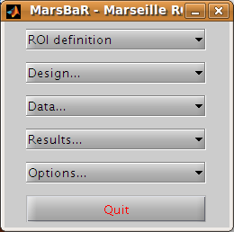
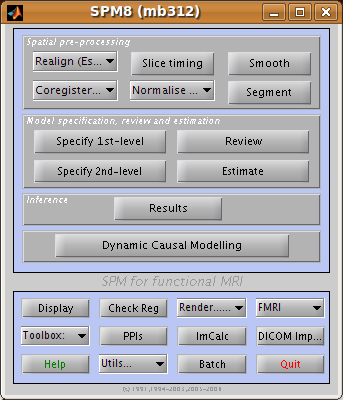
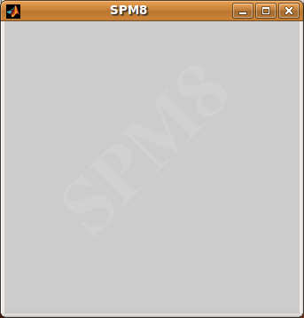
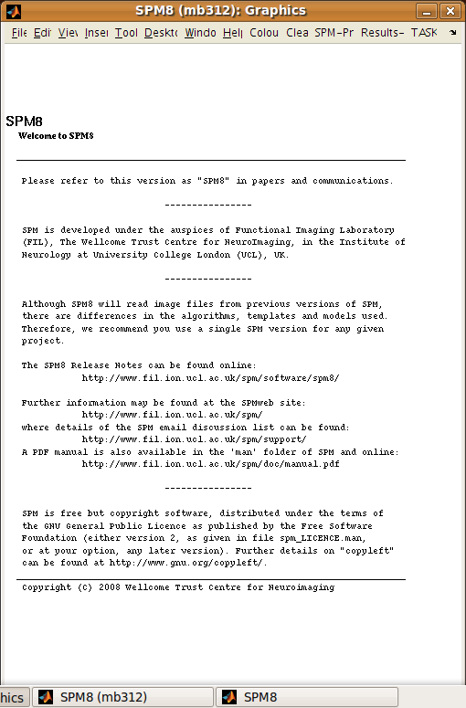
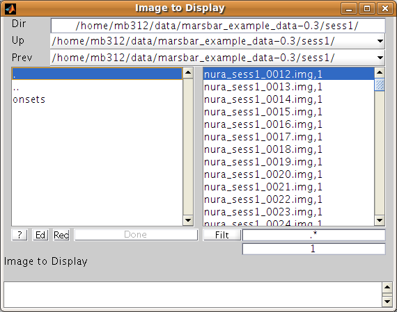
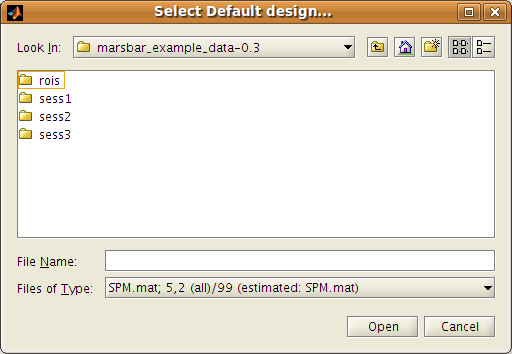

The MarsBaR / SPM interface¶
Let’s begin by naming the windows used by SPM and MarsBaR. After you have started SPM and MarsBaR, you should have the following set of windows:
The MarsBaR window:
Then, at the top left of the screen, the SPM buttons window
Underneath the SPM buttons window, at the bottom left of the screen, is the SPM input window:
SPM and MarsBaR use this window to get input from you, gentle user, such as text, numbers, or menu choices. Usually on the right hand side of the screen, there is the SPM graphics window:
which is used to display results and other graphics.
When SPM and MarsBaR want file or directory names from you, they may use the file selection window:
Sometimes MarsBaR does not use the SPM selection dialog above, but the standard Matlab dialog, that will differ for each platform (linux, windows, mac). Here’s a linux version:
